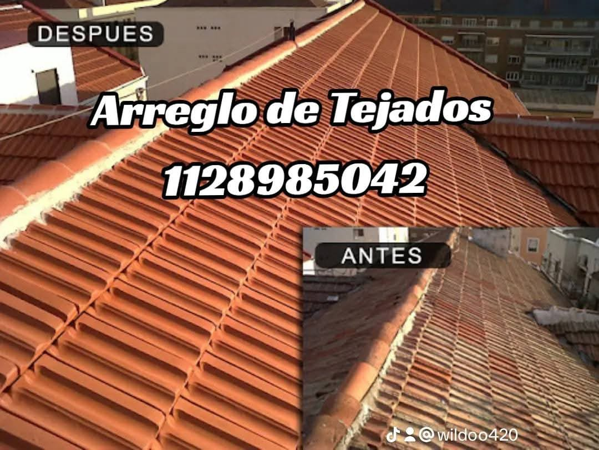
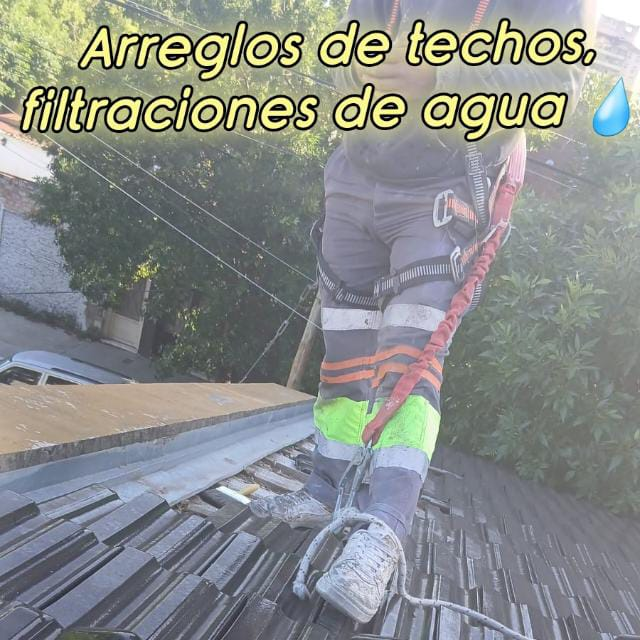
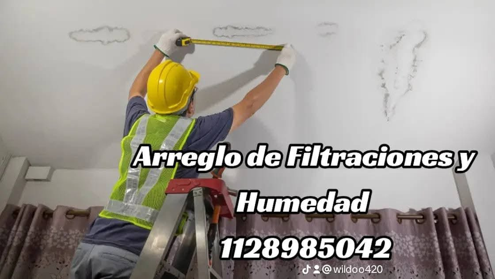

Techos y protección
Reparaciones de cubiertas, revisión de filtraciones e impermeabilización según el tipo de techo.
Consultar por techos ↗Oficios para tu casa · Virrey del Pino
Techos, albañilería y pintura en un mismo lugar. Contanos qué necesitás y conversamos el próximo paso.
Un solo contacto, varios oficios
Una filtración, una pared para reparar o un ambiente para pintar: cada caso pide mirar el estado del lugar y acordar el alcance antes de empezar.
Qué hacemos
Reparaciones de cubiertas, revisión de filtraciones e impermeabilización según el tipo de techo.
Consultar por techos ↗Trabajos de albañilería y refacciones para resolver necesidades de paredes y otros sectores de la vivienda.
Consultar albañilería ↗Preparación y pintura de superficies interiores o exteriores. El alcance se conversa para cada espacio.
Consultar por pintura ↗Una forma clara de avanzar
La consulta sirve para ordenar prioridades y definir qué revisar. El trabajo y sus condiciones se acuerdan para cada caso.
Indicá el tipo de trabajo, la zona y, si podés, adjuntá fotos.
Revisamos la necesidad y qué conviene considerar antes de avanzar.
Definimos el trabajo y las condiciones antes de coordinarlo.
Imágenes compartidas por el negocio
Fotografías y piezas promocionales suministradas para esta página. Se muestran como material compartido por el negocio; no verifican por sí solas obras realizadas ni testimonios.



Zona y atención
La base está en Alborada 6665, Virrey del Pino, Buenos Aires. Consultanos para conversar la ubicación y el trabajo.
Antes de escribir
El alcance concreto se define al conversar cada necesidad.
Techos y reparaciones, impermeabilización, albañilería, refacciones y pintura. Contanos brevemente qué necesitás.
La zona, una descripción del problema y algunas fotos si tenés. Eso ayuda a orientar la conversación inicial.
La cobertura se comunica como Capital y provincia. Consultanos con tu ubicación para confirmar si pueden coordinar el trabajo.
Depende del lugar y del alcance acordado. Consultá para conversar las condiciones antes de avanzar.
Hablemos
Completá los datos y se abrirá WhatsApp con el mensaje preparado para que lo revises y envíes.
+54 9 11 2898-5042Escribir por WhatsApp ↗Alborada 6665 · Virrey del Pino · Buenos Aires